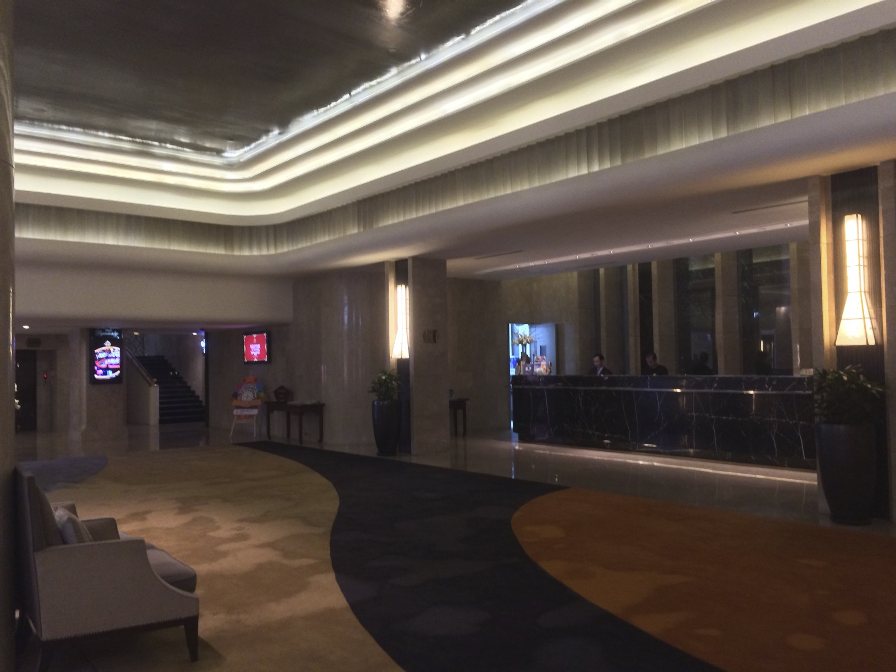
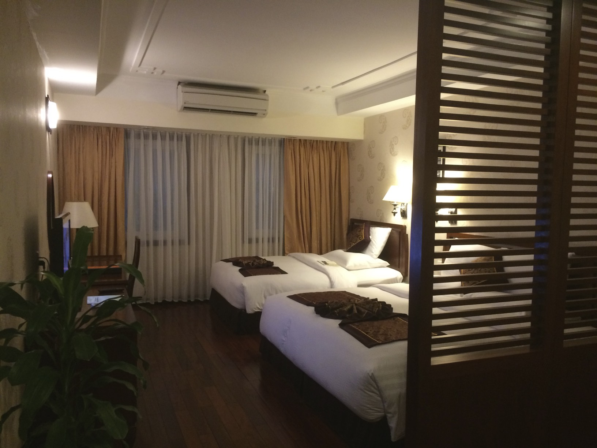
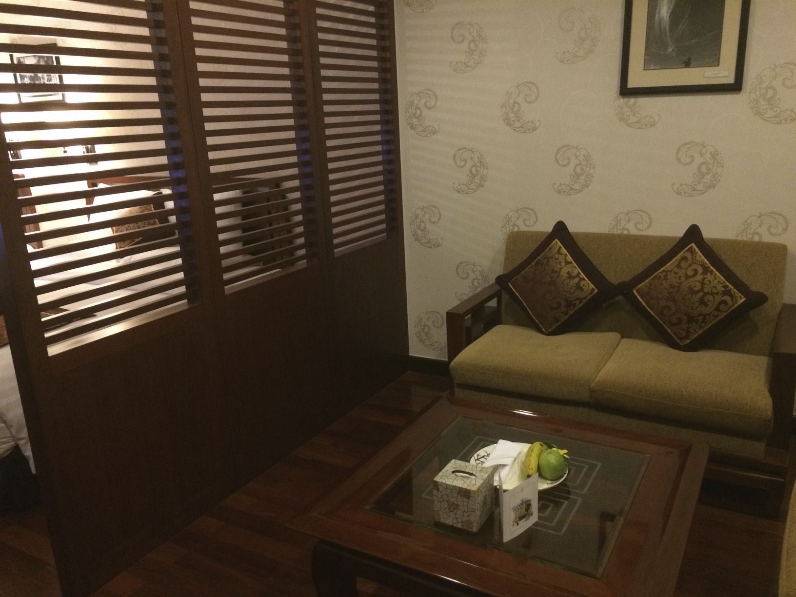
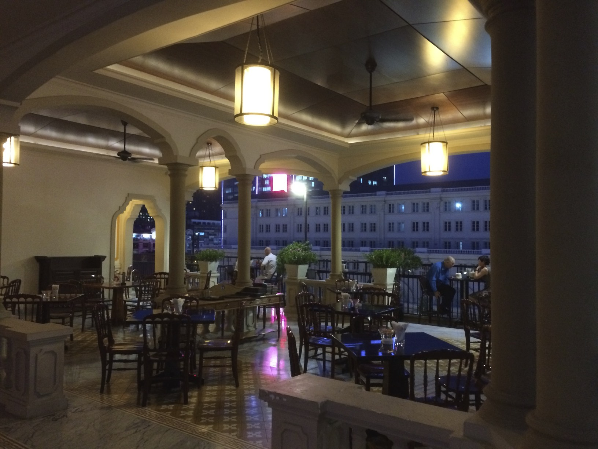
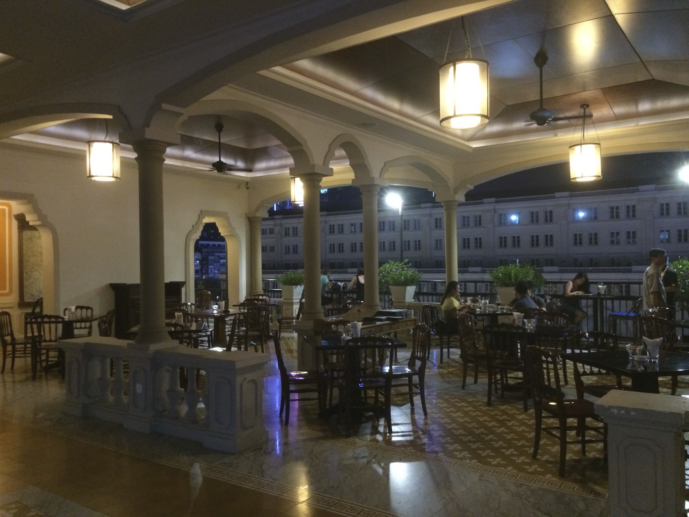
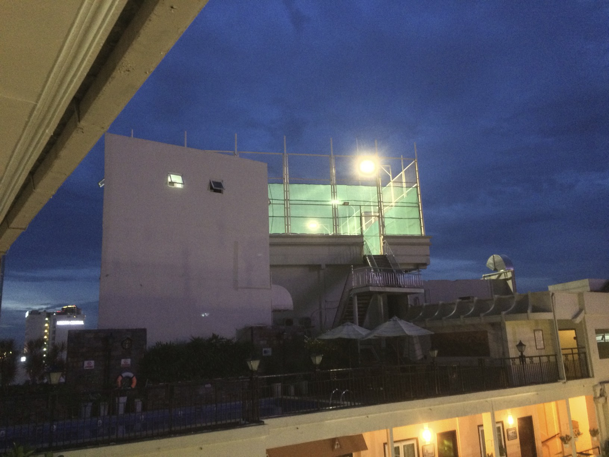
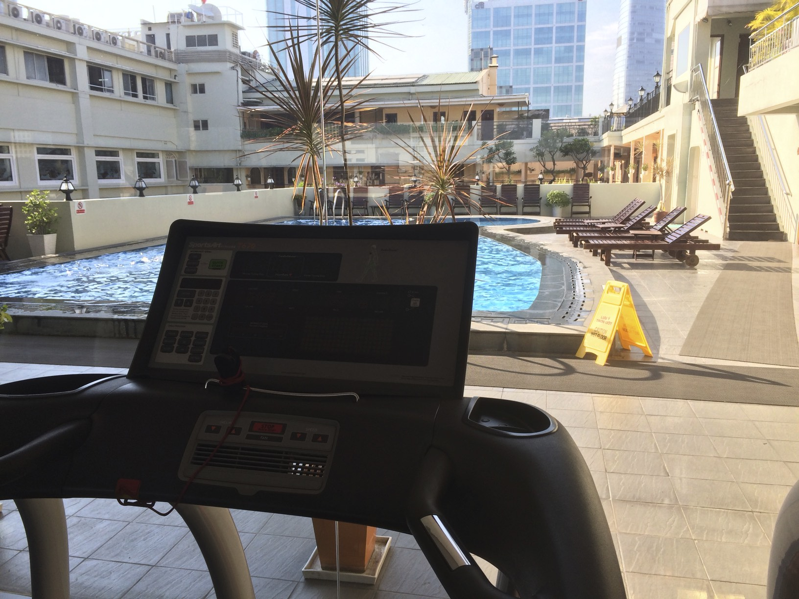

Rex Hotel in Saigon
June 5, 2015The first one to mention it to me was my father in law (Danke Henry!). He said: “When you go to HCMC, do you stay in the famous Hotel Rex?”. I had never heard about it, but he told me about the Americans staying there during the American War (that’s how they call this war here in Vietnam). When arranging meetings here in Saigon, another guy I was supposed to meet came up with a list of hotels where we could meet, and when I saw the Rex I immediatly picked this one. Additionally it was within our budget.
So what’s special about Rex Hotel? Certainly it’s history. And the style is special and unusual. It’s not a top modern de luxe hotel, but it’s easy going and has a lot of features.
It’s very well located, right in the center of Saigon
This is the square right in front of Rex Hotel:
It has a nice entrance area that fits the Asian need to show off

The rooms are nice, spacious and clean. And best: No carpet!


They have the famous Roof Top bar – although it’s pretty empty every time I checked:


They have multiple pools. That’s the central and biggest one:
And they have a tennis court. Yes, in the middle of super-busy-Saigon they have a tennis court on top of all:

Since in Saigon running is no fun in the streets (I miss the beaches of Da Nang!), I used their treadmills and pool every morning:

Besides the fact that beaches are just 100x nicer, the music in the fitness studio really kills you!
Anyways, it was nice to stay here.